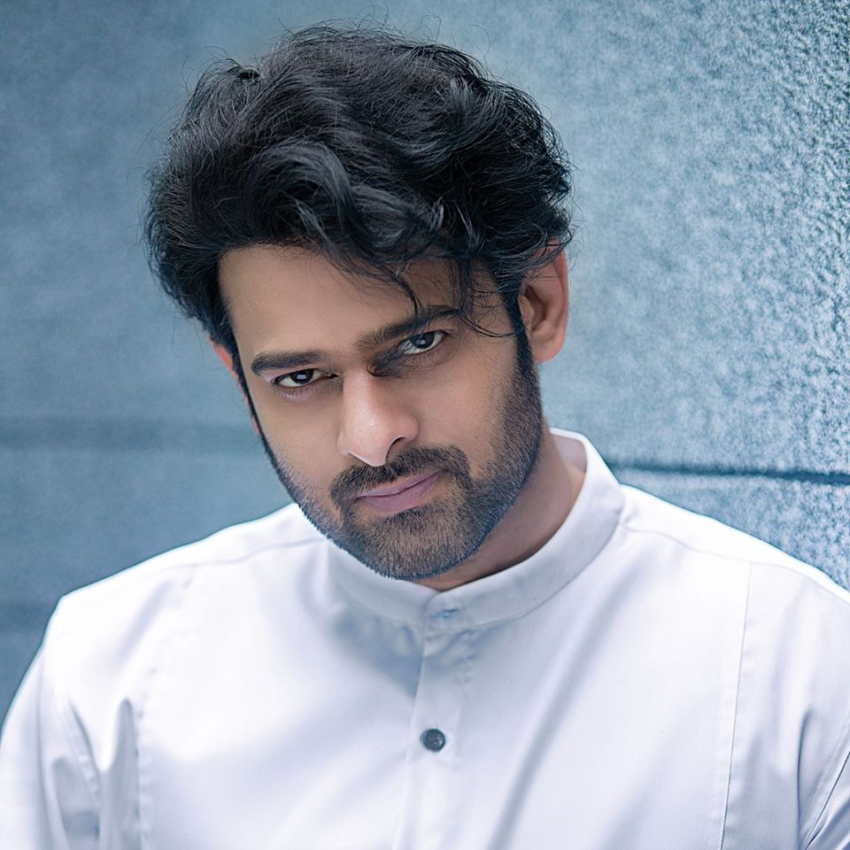

Venkata Satyanarayana Prabhas Raju Uppalapati (Actor) |
 |
Born and Personal LifeUppalapati Venkata Suryanarayana Prabhas Raju born on 23 October 1979, is an Indian actor who predominantly works in Telugu cinema. One of the highest-paid actors in Indian cinema, Prabhas has featured in Forbes India's Celebrity 100 list three times since 2015 based on his income and popularity. He has received seven Filmfare Awards South nominations and is a recipient of a Nandi Award and a SIIMA Award. |
Carrier BeginingPrabhas started his film career with Eeswar (2002). In 2003, he was the lead in Raghavendra. In 2009, his two films were Billa and Ek Niranjan. Ek Niranjan earned him his third nomination for the Filmfare Award for Best Actor. In 2010, he appeared in the romantic comedy Darling which received positive reviews upon release. The Times of India gave a 2.5 star rating explaining "Director Karunakaran extracts good performances from his actors. In 2011, he appeared in another romantic comedy Mr. Perfect. The review site GreatAndhra rated the film with three stars and noted "The film comes across as a clean, family entertainer and the intention of the makers must be appreciated.His performance in the film earned him his fourth nomination for the Filmfare Award for Best Actor |
AchievementsPrabhas has yet grabbed the top spot in the list of Top Ten Most Handsome Asian Men. With his good looks and dashing personality, the star has indeed won the hearts of fans across the globe. Starting off his career with Tollywood film Eeswar in 2002, Prabhas went on to garner a huge deal of global attention with his 2015 film Baahubali: The Beginning directed by SS Rajamouli. His charming avatar on-screen and the film's universal appealing story was highly praised and received immense love from audiences across the world. Not just his on-screen personality, the actor's down-to-earth and warm nature have time and again been a hot topic of discussion on social media. Well, his latest win has indeed left fans amazed who are now trending hashtags #Prabhas and #RebelStar on social media, to celebrate their beloved Rebel Star. |
UpcommingsAs of January 2023, Prabhas has five films under various stages of production. The first of which is the Prashanth Neel-directed action film Salaar. He has completed shooting for Om Raut-dirceted Adipurush, an adaptation of the Hindu epic Ramayana where he plays the role of Lord Rama. He also started filming for Nag Ashwin's untitled sci-fi film, tentatively titled Project K in July 2021, starring alongside Deepika Padukone and Amitabh Bachchan.Prabhas also started filming an untitled horror-comedy film directed by Maruthi in December 2022. His 25th film Spirit is set to be directed by Sandeep Reddy Vanga under the production of UV Creations, T-Series and Bhadrakali Pictures. Prabhas is also committed to star in an untitled Mythri Movie Makers production, directed by Siddharth Anand. |
|
|